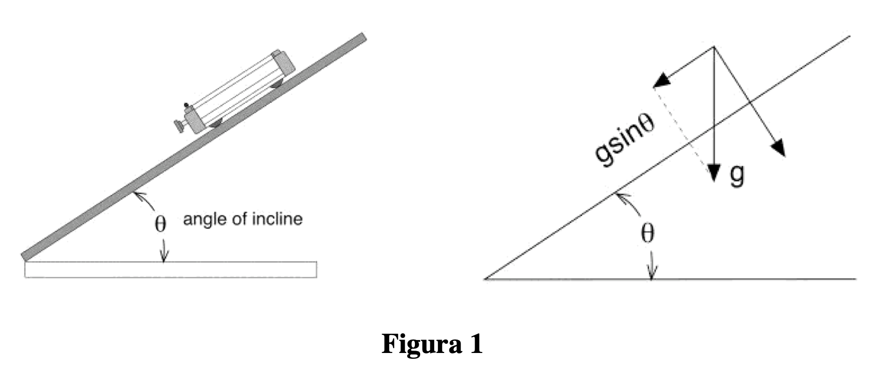
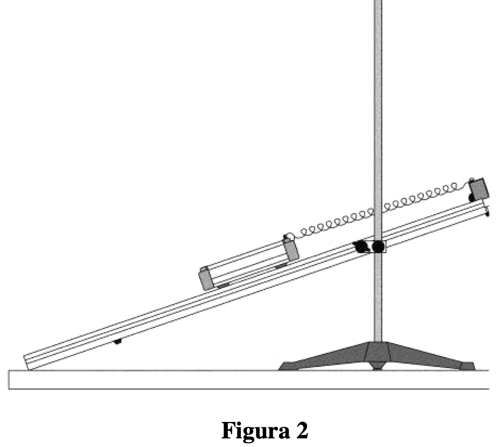
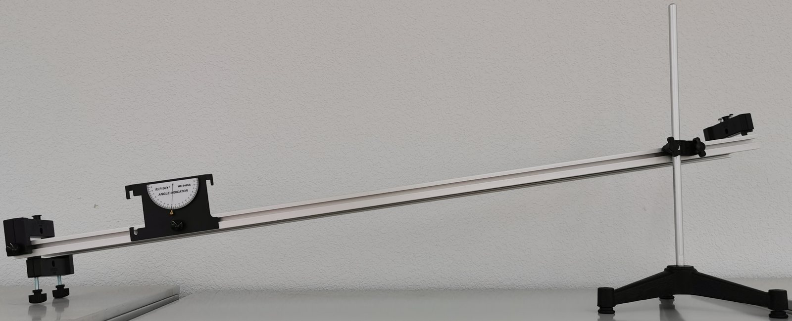
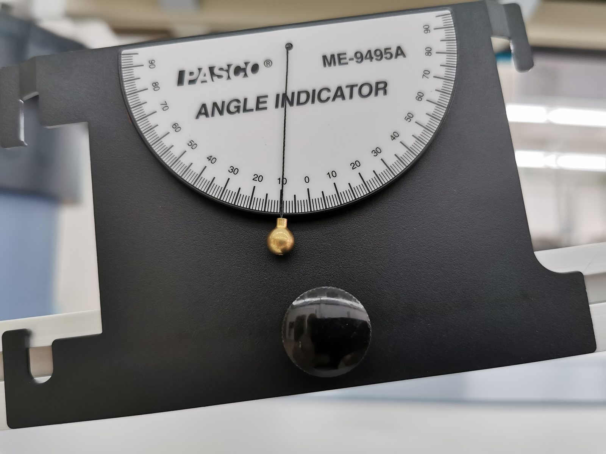
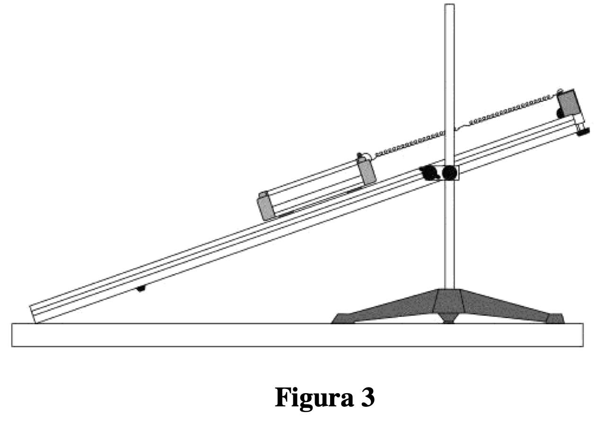
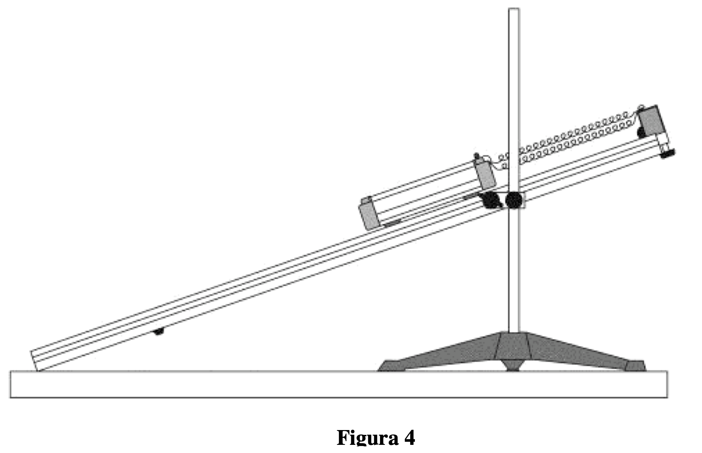
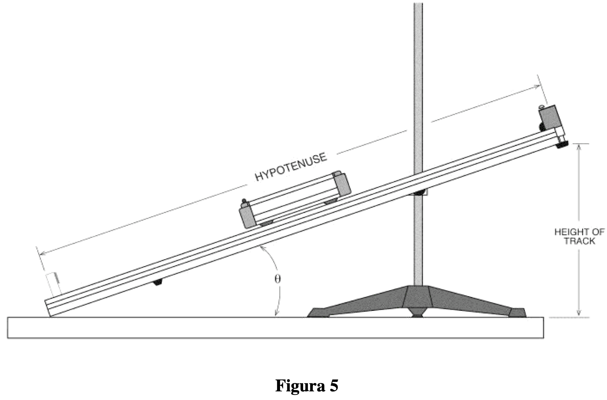
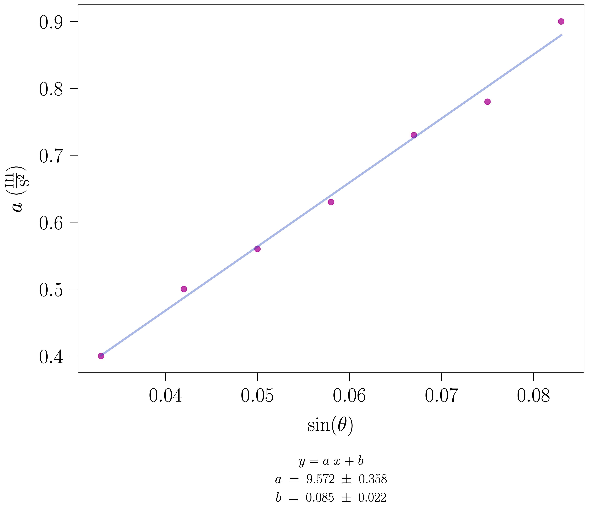
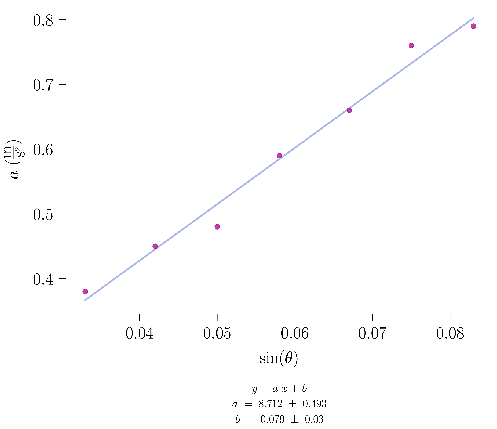

Prácticas de Laboratorio — UNED
2024-10-26
Medida de la constante de recuperación de un muelle por dos métodos y de su acoplamiento en serie y en paralelo; medida de la aceleración de la gravedad g con un carrito sobre un carril inclinado, a partir de la aceleración frente a \sin\theta, sin carga y con carga.
En esta práctica se mide la constante de recuperación asociada a un muelle mediante dos métodos y se compara los resultados. Posteriormente, se estudia el acoplamiento de las constantes de recuperación de dos muelles según estén dispuestos en serie o en paralelo. Finalmente, se mide la aceleración de la gravedad, g, utilizando un dispositivo experimental basado en el deslizamiento de un cuerpo en un plano inclinado.
Nota sobre el nombre: hasta noviembre de 2026 esta práctica se llamaba «mediante un carril de aire» (y su dirección web conserva carril-aire), por una versión antigua que usaba un carril de aire, en el que el deslizador flota sobre una capa de aire y el rozamiento es casi nulo. Hoy se usa un carrito con ruedas sobre un carril de aluminio. El rozamiento de rodadura y la inercia de las ruedas son pequeños, pero no nulos: tenedlos en cuenta en la discusión.
Una masa sujeta a un muelle tiene un periodo de oscilación que viene dado por la expresión:
T = 2\pi \, \sqrt{\dfrac{m}{k}} \tag{1}
En esa expresión, m es la masa que está oscilando y k, la constante de recuperación del muelle.
Estrictamente, la masa que oscila no es solo la del carrito: también se mueve el muelle, y su efecto equivale a añadir aproximadamente un tercio de su masa, m\to m_{\mathrm{carro}}+m_{\mathrm{muelle}}/3 (véase la práctica Ley de Hooke). Pesad los muelles y estimad si esta corrección es despreciable frente a los errores de vuestras medidas; en la disposición en serie se mueven los dos muelles.
Según la ley de Hooke, la fuerza ejercida por un muelle es proporcional a la elongación de éste respecto a su longitud de natural o de equilibrio. Matemáticamente, dicha fuerza viene dada por la expresión |F|=|k\cdot \Delta x|, donde k es la constante de proporcionalidad y \Delta x, la elongación del muelle. La constante k se puede determinar aplicando diferentes fuerzas al muelle a fin de obtener un conjunto de elongaciones. Si se representa el módulo de la fuerza frente las \Delta x obtenidas, la pendiente de la línea recta resultante es igual a k.
Por otra parte, midiendo el periodo de oscilación se puede determinar la constante del muelle a partir de la primera ecuación.
Esos dos procedimientos para determinar la constante de recuperación del muelle son precisamente los que se han utilizado en la práctica Ley de Hooke para obtener k de manera experimental: método directo, calibrando el muelle y, método indirecto, midiendo el periodo de oscilación y linealizando el probema.
Si una masa se encuentra sujeta a la acción de dos muelles iguales, éstos pueden estar dispuestos en serie o en paralelo. El conjunto es equivalente a un único muelle con una constante de recuperación denominada k_{efectiva}. Dependiendo de la manera en la que se combinen los muelles el valor de la k_{efectiva} estará determinado por una de las siguientes expresiones, supuestos iguales los dos muelles:
k_{\textrm{efectiva}} = k + k \Rightarrow \boxed{k_{\textrm{efectiva}} = 2k} \tag{2}
\dfrac{1}{k_{\textrm{efectiva}}} = \dfrac{1}{k} + \dfrac{1}{k} = \dfrac{2}{k}\rightarrow \boxed{k_{\textrm{efectiva}}=\dfrac{1}{2}\,k} \tag{3}
En estas fórmulas k hace referencia a la constante de cada muelle por separado (ambos muelles se consideran iguales y, por lo tanto, tienen aproximadamente la misma constante).
Si se sitúa el coche sobre un plano inclinado, éste rueda hacia abajo por acción de la gravedad, g. La componente de g paralela al plano inclinado es g\sin\theta. Por tanto, esa es la aceleración que experimentará el carro si se desprecia el rozamiento (ver figura 1).

Para medir la aceleración del coche, se parte de una situación en la que se encuentra en reposo y se mide el tiempo t que tarda en recorrer cierta distancia d. Partiendo de la expresión que determina la distancia recorrida por un cuerpo sometido a una aceleración constante, d=\dfrac{1}{2}at^{2}, se puede obtener la aceleración del móvil sin más que despejarla de dicha expresión. La ecuación resultante es:
a = \dfrac{2\,d}{t^{2}} \tag{4}
Teniendo en cuenta que a=g\sin\theta, una representación de la aceleración del coche frente al \sin del ángulo correspondiente, a distintas inclinaciones del plano, se debe ajustar a una recta cuya pendiente es la aceleración de la gravedad, g.
1
Primeramente, medir con la balanza la masa del coche.
Para este caso concreto el valor es: M_{\textrm{coche}}=495.8 \pm 0.1.
Observad, cómo se ha indicado el error en la masa del coche. Se ha realizado una única pesada, con lo que el error es, simplemente, el error del aparato. En este caso, se midió con una balanza con una precisión de 0.1 g.
2
Se monta el equipo según la figura 2.
Se fija el muelle a un extremo del coche y a un extremo del carril y se inclina éste último. Es recomendable que el ángulo de inclinación del carril sea grande (que la altura del extremo del carril sea de unos 40 cm).
Conviene verificar que el coche esté correctamente situado en el carril.
¿Por qué inclinar el carril? Un muelle solo puede tirar, no empujar. Al inclinar el carril, la componente del peso estira el muelle una distancia
\Delta x_0=\frac{m\,g\sin\theta}{k},
y el carrito oscila alrededor de esa nueva posición de equilibrio. Mientras la amplitud sea menor que \Delta x_0, el muelle no llega a destensarse y el movimiento es armónico. Con m\approx0.5 kg, k\approx6 N/m y \sin\theta\approx0.33 (h\approx40 cm en un carril de 1.2 m), \Delta x_0\approx27 cm. Con dos muelles en serie el estiramiento se duplica: comprobad que no supera unos 50 cm ni el límite elástico del muelle; si es necesario, bajad el carril para esa parte.



Fotografías del montaje del Laboratorio Docente 0.16, abril de 2021.
3
Poner a oscilar el muelle.
Para ello desplazar el coche (sin masa añadida) una cierta distancia hacia arriba por el carril, del orden de 4 cm, y dejarlo en libertad.
La elección de esta distancia, que sería la amplitud inicial de las oscilaciones, se hace teniendo en cuenta que tiene que ser lo suficientemente grande para que se puedan contar 3 oscilaciones y lo suficientemente pequeña para que al desplazar el coche hacia arriba no se desenganche el muelle.
Si el amortiguamiento lo permite, contad más ciclos (5 o 10): el tiempo de reacción, de 0.1 a 0.2 s, se reparte entre más periodos. Empezad a cronometrar cuando el carrito pase por la posición de equilibrio, no en un extremo. Si disponéis de un móvil, el cronómetro acústico de phyphox (un golpecito en el carril marca el inicio y el final) elimina gran parte del tiempo de reacción.
4
Medir el tiempo que invierte en realizar tres ciclos completos.
Repetir esta medida cinco veces como mínimo.
Calcular la media del tiempo (y su error) para las cinco medidas y a partir de ese resultado obtener el período (y su error) de ese movimiento oscilatorio.
Datos
experimentales
A continuación en la tabla se resumen los datos recogidos en el laboratorio.
Hay que tener en cuenta que los tiempos t_{i} se corresponden a 3 periodos.
| Muelles | t_1 (s) | t_2 (s) | t_3 (s) | t_4 (s) | t_5 (s) | T_{\textrm{medio}} (s) | \Delta T_{\textrm{medio}} (s) |
|---|---|---|---|---|---|---|---|
| Uno | 5.12 | 5.50 | 5.44 | 5.40 | 5.32 | 1.79 | 0.03 |
Cuestión: ¿Cambiará ese periodo si variamos el ángulo del plano inclinado?
Para contestarla con datos, medid el periodo a dos o tres inclinaciones distintas. Pista: una fuerza constante (la componente del peso a lo largo del carril) solo desplaza la posición de equilibrio; escribid la ecuación del movimiento respecto de la nueva posición de equilibrio y ved si aparece \theta.
5
Utilizando la primera ecuación determinar el valor de la constante k y su error, \Delta k.
Para el error, seguid las reglas de los errores: con N=5 medidas, el error de cada medida es \varepsilon=\max(e_p,D_m) con D_m=(t_{\max}-t_{\min})/2, y el de la media \varepsilon/\sqrt{N}. En el ejemplo, D_m=(5.50-5.12)/2=0.19 s, de modo que \overline{3T}=(5.36\pm0.09) s y T=(1.79\pm0.03) s. Entonces
k=\frac{4\pi^{2}m}{T^{2}},\qquad \frac{\Delta k}{k}=\sqrt{\left(\frac{\Delta m}{m}\right)^{2}+\left(\frac{2\,\Delta T}{T}\right)^{2}} .
Con los valores de la tabla se obtiene el siguiente resultado: \boxed{k = (6.1 \pm 0.2) \textrm{ N/m}}. (Versiones anteriores daban 6.14\pm0.08 N/m, con el error estándar de la media en lugar de la regla del Manual.)
6
Con el carrito colgado del muelle en el carril inclinado y en reposo, anotad la posición de equilibrio x_0 (usad la escala del carril y un punto fijo del carrito). Añadid masas m_i al carrito (cinco valores, sin estirar el muelle más de unos 50 cm) y anotad cada nueva posición de equilibrio x_i. La fuerza adicional a lo largo del carril es F_i=m_i\,g\sin\theta, y en el equilibrio F_i=k\,(x_i-x_0). Representad x_i-x_0 (la magnitud que se lee con error) frente a F_i: la pendiente es 1/k. Comparad este valor de k con el obtenido a partir del periodo, con sus errores. Así se cumple el objetivo de medir k por dos métodos.
Serie
1
Manteniendo el carril con el mismo ángulo de inclinación que en el apartado anterior, añadir un segundo muelle en serie con el primero, según se muestra en la figura 3.

Como en el apartado 3 de la sección anterior, desplazar el coche del equilibrio una cierta distancia y dejarlo en libertad.
Medir el tiempo que invierte en realizar tres ciclos completos.
Repetir esta medida cinco veces. Calcular el período medio.
Usando el período y la masa del coche, calcular la constante efectiva y su error, k_{\textrm{efectiva}} y \Delta k_{\textrm{efectiva}}, asociada al conjunto de los muelles por medio de la primera ecuación.
Datos
experimentales
A continuación en la tabla se resumen los datos recogidos en el laboratorio.
Hay que tener en cuenta que los tiempos t_{i} se corresponden a 3 periodos.
| Muelles | t_1 (s) | t_2 (s) | t_3 (s) | t_4 (s) | t_5 (s) | T_{\textrm{medio}} (s) | \Delta T_{\textrm{medio}} (s) |
|---|---|---|---|---|---|---|---|
| Dos en serie | 7.47 | 7.41 | 7.47 | 7.46 | 7.35 | 2.477 | 0.009 |
Con los valores de la tabla, y la misma regla para el error, se obtiene el siguiente resultado: \boxed{k_{\textrm{efectiva}} = (3.19 \pm 0.02) \textrm{ N/m}}.
Paralelo
2
Disponer los dos muelles en paralelo, como se muestra en la figura 4, y repetir los pasos del apartado anterior.

Como en el apartado anterior, desplazar el coche del equilibrio una cierta distancia y dejarlo en libertad.
Medir el tiempo que invierte en realizar tres ciclos completos.
Repetir esta medida cinco veces. Calcular el período medio.
Usando el período y la masa del coche, calcular la constante efectiva y su error, k_{\textrm{efectiva}} y \Delta k_{\textrm{efectiva}}, asociada al conjunto de los muelles por medio de la primera ecuación.
Datos
experimentales
A continuación en la tabla se resumen los datos recogidos en el laboratorio.
Hay que tener en cuenta que los tiempos t_{i} se corresponden a 3 periodos.
| Muelles | t_1 (s) | t_2 (s) | t_3 (s) | t_4 (s) | t_5 (s) | T_{\textrm{medio}} (s) | \Delta T_{\textrm{medio}} (s) |
|---|---|---|---|---|---|---|---|
| Dos en paralelo | 3.63 | 3.84 | 3.75 | 3.81 | 3.72 | 1.250 | 0.016 |
Con los valores de la tabla se obtiene el siguiente resultado: \boxed{k_{\textrm{efectiva}} = (12.5 \pm 0.3) \textrm{ N/m}}.
3
Comparar la k_{\textrm{efectiva}} de las dos disposiciones de muelles, serie y paralelo con la constante de fuerza asociada a un sólo muelle (k).
Comparar con las expresiones (2) y (3) del fundamento teórico y asignar la válida en cada caso.
Calculad los valores esperados k_{\mathrm{par}}=2k y k_{\mathrm{ser}}=k/2 con su error (\Delta k_{\mathrm{par}}=2\Delta k, \Delta k_{\mathrm{ser}}=\Delta k/2) y comprobad si los intervalos se solapan con los medidos. Con los datos de ejemplo, 2k=(12.3\pm0.4) N/m frente a (12.5\pm0.3) N/m, y k/2=(3.07\pm0.10) N/m frente a (3.19\pm0.02) N/m. Si no se solapan, pensad en la masa de los muelles (en serie se mueven los dos) y en si los dos muelles son realmente iguales: medid primero cada muelle por separado.
1
Inclinar el carril de forma que la altura del extremo elevado sea de 10 cm. (figura 5).

Calcular el valor de \sin\theta.
Para determinar el seno del ángulo de inclinación, \sin\theta, medir la longitud del carril y la altura a la que se encuentra el extremo de éste en cada caso y utilizar la relación trigonométrica correspondiente.
Medid la altura de los dos extremos del carril sobre la mesa, h_{\mathrm{alto}} y h_{\mathrm{bajo}}, y la distancia L entre los puntos de apoyo; entonces \sin\theta=(h_{\mathrm{alto}}-h_{\mathrm{bajo}})/L. Antes de empezar, comprobad con un nivel (o con el experimento Inclination de phyphox) que la mesa está horizontal, o colocad el carril horizontal y ved si el carrito se mueve solo. Propagad el error:
\Delta(\sin\theta)=\frac{1}{L}\sqrt{\Delta h_{\mathrm{alto}}^{2}+\Delta h_{\mathrm{bajo}}^{2}+\sin^{2}\theta\,\Delta L^{2}} .
Colocar el coche sobre el carril y llevarlo hasta el extremo más elevado.
Anotar la posición inicial desde la que el coche va a comenzar el movimiento.
Llevar el coche ahora al extremo opuesto, el más bajo, y anotar la posición final del coche. De esta forma, se obtiene la distancia total que va a recorrer el coche desde un extremo del carril al otro (d).
Usad siempre el mismo punto del carrito (por ejemplo, su borde delantero) para leer x_0 y x_f. Colocad el tope final (con su parachoques magnético o de muelle) y, si es posible, que un compañero frene el carrito con la mano justo después del tope. Quitad el muelle antes de esta parte, soltad el carrito sin empujarlo y no dejéis masas sueltas encima.
2
Dejar el coche en libertad partiendo del reposo y medir con el cronómetro el tiempo invertido en recorrer todo el trayecto.
La persona que suelta el coche debería usar el cronómetro.
Repetir esta medida al menos 8–10 veces por inclinación (PASCO recomienda 10; los datos de ejemplo tienen solo 4), intercambiándose en la tarea de cronometrar. Si el error relativo de a supera el 10 %, el Manual pide aumentar el número de medidas o mejorar el método (por ejemplo, con el cronómetro acústico de phyphox: el golpe de salida y el choque con el tope final marcan los dos instantes).
Bajar el extremo del carril 1 cm y repetir las medidas anteriores, determinando en cada caso el valor del \sin.
Seguir realizando medidas de este tipo disminuyendo 1 cm la altura del extremo del carril en cada paso hasta un total de 7 ángulos, completando una tabla de tiempos de la forma siguiente:
(Se pueden coger otros valores para la altura del extremo del carril, siempre que abarquen aproximadamente un intervalo semejante.)
3
Calcular el tiempo medio (t) para cada ángulo y, utilizando la fórmula (4), determinar las aceleraciones correspondientes a cada inclinación. Completar una tabla como la de más abajo.
Calculad también el error de cada aceleración, porque lo necesitaréis para las barras de error de la gráfica y para contestar la primera cuestión:
a=\frac{2d}{t^{2}},\qquad \frac{\Delta a}{a}=\sqrt{\left(\frac{\Delta d}{d}\right)^{2}+\left(\frac{2\,\Delta t}{t}\right)^{2}},
con \Delta t=\max(e_p,D_m)/\sqrt{N}. Redondead a y \Delta a con las reglas del Manual (una cifra significativa en el error, dos si es un 1). Con los datos de la primera tabla de ejemplo, \Delta a va de 0.01 a 0.07 m/s² (entre el 2 y el 8 %).
Datos
experimentales
A continuación en la tabla se resumen los datos recogidos en el laboratorio.
| h\textrm{ (cm)} | \sin (\theta) | x_{0}\textrm{ (m)} | x_{f}\textrm{ (m)} | d=x_f-x_0\textrm{ (m)} | t_{1}(s) | t_{2}(s) | t_{3}(s) | t_{4}(s) | \hat{t}(s) | \sigma_{t} | a\left(\mathrm{m} / \mathrm{s}^{2}\right) |
|---|---|---|---|---|---|---|---|---|---|---|---|
| 10 | 0.083 | 0.254 | 1.170 | 0.916 | 1.44 | 1.47 | 1.50 | 1.28 | 1.423 | 0.0850 | 0.90 |
| 9 | 0.075 | 0.253 | 1.170 | 0.917 | 1.59 | 1.53 | 1.50 | 1.50 | 1.530 | 0.0367 | 0.78 |
| 8 | 0.067 | 0.253 | 1.170 | 0.917 | 1.50 | 1.47 | 1.72 | 1.63 | 1.580 | 0.1007 | 0.73 |
| 7 | 0.058 | 0.253 | 1.170 | 0.917 | 1.75 | 1.81 | 1.66 | 1.59 | 1.702 | 0.0841 | 0.63 |
| 6 | 0.050 | 0.253 | 1.170 | 0.917 | 1.68 | 1.81 | 1.97 | 1.78 | 1.810 | 0.1042 | 0.56 |
| 5 | 0.042 | 0.254 | 1.170 | 0.916 | 1.90 | 1.97 | 1.78 | 1.97 | 1.905 | 0.0776 | 0.50 |
| 4 | 0.033 | 0.255 | 1.170 | 0.915 | 2.13 | 2.16 | 2.16 | 2.06 | 2.127 | 0.0409 | 0.40 |
4
Representar gráficamente los puntos experimentales obtenidos de la aceleración, a, frente a \sin(\theta) y hacer la correspondiente regresión lineal.
El valor de la pendiente obtenida debe ser igual a g, si el modelo a=g\sin\theta fuera exacto.
En un carrito con ruedas la ecuación a=g\sin\theta no es exacta. Si las ruedas (momento de inercia total I_r, radio r) ruedan sin deslizar y hay un rozamiento de rodadura pequeño,
a\simeq\frac{g\sin\theta}{1+\dfrac{I_r}{m\,r^{2}}}-a_{\mathrm{roz}} ,
de modo que la pendiente de a frente a \sin\theta es algo menor que g y la ordenada en el origen es negativa. Una ordenada positiva no puede venir del rozamiento: indica que \sin\theta tiene un error de cero (la mesa o el carril no están horizontales con h=0). Con los datos de ejemplo, la recta sin carga tiene pendiente (9.6\pm0.4) m/s² y ordenada (0.08\pm0.02) m/s², y la recta con carga, (8.7\pm0.5) m/s² y (0.08\pm0.03) m/s²: discutid ambos resultados con estas ideas.
Comparar el valor de g obtenido con el valor teórico.

Cuestiones
Existe un error en las medidas, debido al tiempo de reacción de la persona que cronometra.
Explicar cómo depende con el ángulo de inclinación.
Pista: si el tiempo de reacción introduce un error \delta t parecido en todas las medidas, el error relativo de la aceleración es 2\,\delta t/t. ¿En qué inclinaciones es menor t? Calculad 2\,\delta t/t para h=10 cm y h=4 cm con \delta t=0.15 s.
Si se dobla la masa del coche, ¿cómo se ven afectados los resultados?
Hacer una prueba.
Al cargar el carrito, I_r/(m r^{2}) disminuye y la pendiente debería acercarse a g. Usad esta idea para contestar la cuestión con vuestros datos, comparando las dos pendientes con sus errores.
Datos
experimentales
A continuación en la tabla se resumen los datos recogidos en el laboratorio.
Hay que tener en cuenta que los tiempos t_i son los tiempos de bajada desde x_0 hasta x_f (no periodos). La masa del carrito con carga no se anotó en estos datos de ejemplo; en vuestras medidas, anotadla (M=\dots\pm0.1 g).
| h\textrm{ (cm)} | \sin (\theta) | x_{0}\textrm{ (m)} | x_{f}\textrm{ (m)} | d=x_f-x_0\textrm{ (m)} | t_{1}(s) | t_{2}(s) | t_{3}(s) | t_{4}(s) | \hat{t}(s) | \sigma_{t} | a\left(\mathrm{m} / \mathrm{s}^{2}\right) |
|---|---|---|---|---|---|---|---|---|---|---|---|
| 10 | 0.083 | 0.251 | 1.1700 | 0.919 | 1.53 | 1.59 | 1.50 | 1.47 | 1.522 | 0.044 | 0.79 |
| 9 | 0.075 | 0.251 | 1.1700 | 0.919 | 1.55 | 1.44 | 1.59 | 1.66 | 1.560 | 0.080 | 0.76 |
| 8 | 0.067 | 0.252 | 1.1700 | 0.918 | 1.72 | 1.72 | 1.53 | 1.69 | 1.665 | 0.079 | 0.66 |
| 7 | 0.058 | 0.252 | 1.1700 | 0.918 | 1.69 | 1.78 | 1.79 | 1.81 | 1.768 | 0.046 | 0.59 |
| 6 | 0.050 | 0.253 | 1.1700 | 0.917 | 1.97 | 2.09 | 1.87 | 1.85 | 1.945 | 0.095 | 0.48 |
| 5 | 0.042 | 0.253 | 1.1700 | 0.917 | 1.89 | 2.00 | 2.13 | 2.06 | 2.020 | 0.088 | 0.45 |
| 4 | 0.033 | 0.254 | 1.1700 | 0.916 | 2.31 | 2.18 | 2.12 | 2.19 | 2.200 | 0.069 | 0.38 |

En el siguiente vídeo se puede observar (parte) lo que se propone en esta práctica:
https://www.youtube.com/embed/E4J92AsZMAg
Licencia Atribución de Creative Commons (re-utilización permitida)